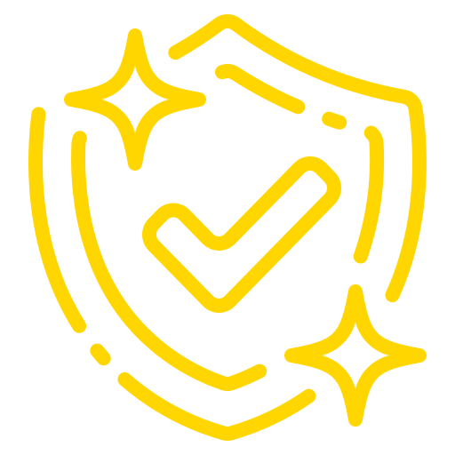
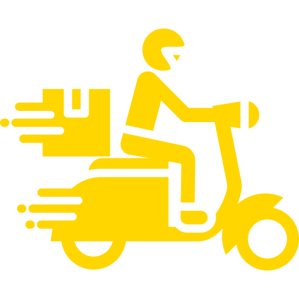
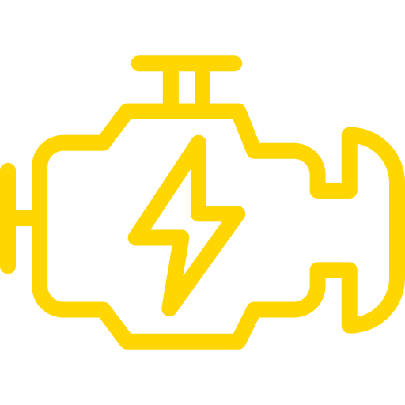
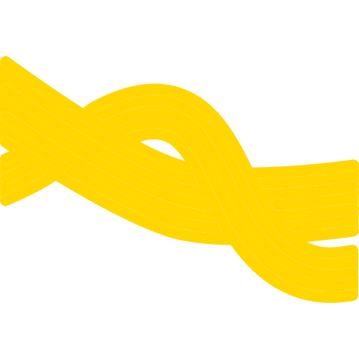
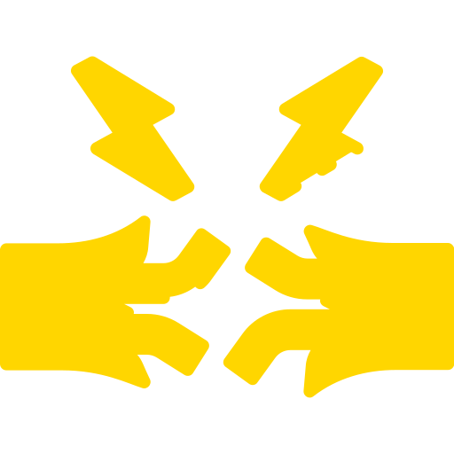
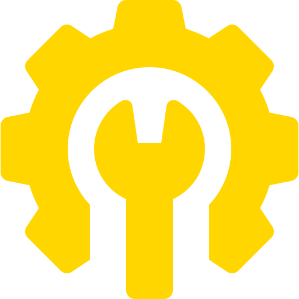
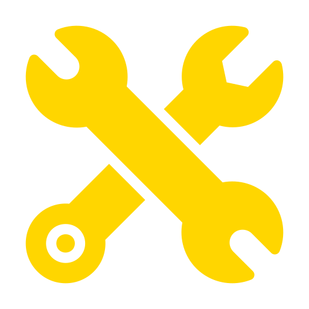

Wiretuck Profesional
Pengerjaan rapi, aman, dan mudah untuk perawatan.
PREMIUM WIRING SOLUTION
Spesialis clean wire, wire tuck,
dan custom kelistrikan motor premium.


ABOUT CLEAN WIRE GARAGE
Clean Wire Garage adalah spesialis wiretuck dan perbaikan kelistrikan motor yang berfokus pada kerapihan, keamanan, dan kualitas pengerjaan. Kami melayani berbagai kebutuhan kelistrikan mulai dari wiretuck area mesin, perbaikan jalur kabel, custom wiring, pemasangan aksesori, hingga troubleshooting kelistrikan motor.
Setiap pengerjaan dilakukan dengan teliti agar sistem kelistrikan tetap aman, mudah dalam perawatan, dan memiliki tampilan yang lebih rapi. Dengan sistem reservasi dan layanan home service, Clean Wire Garage siap memberikan solusi kelistrikan motor yang profesional, praktis, dan bergaransi.
Pengerjaan rapi, aman, dan mudah untuk perawatan.
Setiap pengerjaan mendapatkan garansi sesuai ketentuan.
Layanan datang langsung ke lokasi sesuai jadwal reservasi.
LAYANAN CLEAN WIRE GARAGE

Perapihan jalur kabel area mesin agar terlihat lebih clean, aman, dan mudah dirawat.

Perapihan jalur kabel dari depan sampai belakang untuk kebutuhan harian maupun build custom.

Diagnosa dan perbaikan masalah kelistrikan seperti lampu, sein, klakson, starter, fuse, relay, dan grounding.

Pembuatan atau perubahan jalur kabel sesuai kebutuhan motor, aksesori, dan konsep build.

Instalasi lampu kolong, biled, saklar tambahan, USB charger, dan aksesori kelistrikan lainnya.
Layanan pengerjaan datang langsung ke lokasi sesuai jadwal reservasi yang sudah disepakati.
WHY CHOOSE CWG
Fokus kami bukan cuma bikin kabel terlihat rapi, tapi memastikan jalur kelistrikan aman, fungsional, dan mudah dicek saat perawatan.
Setiap pengerjaan mendapatkan garansi sesuai ketentuan layanan.
Layanan datang ke lokasi customer sesuai jadwal reservasi.
Jalur kabel ditata agar aman, clean, dan mudah dicek saat perawatan.
Jadwal pengerjaan lebih tertata dan konsultasi lebih praktis.
SERVICE MENU
Paket wiring, wire tuck, dan custom kelistrikan untuk build motor yang rapi, aman, dan siap dipakai harian maupun show.
Pilih Brand
Cek jalur kabel, relay, fuse, dan grounding.
Mulai Rp50.000Kabel putus, kabel terbakar, dan jalur custom.
Mulai Rp75.000Lampu mati, sein mati, dan stoplamp mati.
Mulai Rp50.000Starter tidak berfungsi, fuel pump tidak priming, dan relay starter.
Mulai Rp75.000Ganti soket dan perbaikan pin connector.
Mulai Rp50.000Kiprok, spul, dan aki tekor.
Mulai Rp100.000Pembuatan jalur kabel baru, modifikasi jalur kabel, dan rapih ulang jalur kabel.
Mulai Rp150.000Rumah relay custom, jalur relay tambahan, dan fuse box custom.
Mulai Rp100.000Relokasi ECU, relay, fuse box, dan komponen kelistrikan lainnya.
Mulai Rp100.000Pembuatan ulang jalur kabel motor, cocok untuk motor restorasi atau project build.
Mulai Rp500.000Lampu utama full DC dengan jalur pengisian yang disesuaikan.
Mulai Rp150.000Hidden wiring, routing kabel khusus, dan sistem kelistrikan custom.
Hubungi AdminSingle Color, RGB Bluetooth, dan RGB App Control.
Mulai Rp50.000USB Charger 1 Port dan USB Charger Fast Charging.
Mulai Rp50.000Saklar lampu, saklar aksesori, dan saklar custom.
Mulai Rp50.000Klakson keong dan klakson disc.
Mulai Rp50.000Lampu alis, hazard, dan volt meter.
Hubungi AdminPerapihan kabel menggunakan sleeve braided.
Mulai Rp100.000Finishing sambungan lebih rapi dan aman.
Mulai Rp10.000Penggantian soket menjadi waterproof.
Mulai Rp15.000Relay lampu dan relay aksesori.
Mulai Rp50.000Jalur fuse khusus aksesori.
Mulai Rp25.000Penambahan atau perbaikan grounding.
Mulai Rp50.000Pengerjaan di lokasi customer.
Ongkos sesuai jarakHarga dapat berubah sesuai kondisi motor, tingkat kesulitan jalur kabel, serta request custom dari customer.
FAQ
Iya, reservasi membantu kami cek kebutuhan motor dan menentukan jadwal pengerjaan yang paling pas.
Bisa, untuk layanan tertentu dan lokasi yang masuk jangkauan sesuai jadwal reservasi.
Durasi mengikuti kondisi motor dan tingkat custom, mulai dari beberapa jam sampai beberapa hari.
Setiap pengerjaan mendapatkan garansi sesuai ketentuan dan jenis layanan yang dipilih.
AREA LAYANAN
Clean Wire Garage melayani pengerjaan by reservasi untuk area Bandung dan sekitarnya.
Home Service tersedia sesuai jadwal reservasi dan jarak lokasi customer.
PROSES PENGERJAAN
Customer konsultasi kebutuhan motor melalui WhatsApp.
Admin menentukan jadwal pengerjaan sesuai antrian.
Motor dicek untuk mengetahui kondisi jalur kelistrikan.
Pengerjaan dilakukan sesuai layanan yang dipilih.
Hasil pengerjaan dicek ulang sebelum serah terima.
Konsultasikan kebutuhan wiretuck, custom wiring, dan perbaikan kelistrikan motor Anda bersama Clean Wire Garage.
Reservasi Sekarang ↗